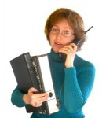
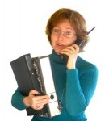
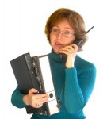

]]>

]]>Read more on Wikipedia.
]]>The CMYK model works by partially or entirely masking certain colors on the typically white background (that is, absorbing particular wavelengths of light). Such a model is called subtractive because inks “subtract” brightness from white.
Read more on Wikipedia.
]]>

]]>At Demo Graphics we are justifiably proud of the growth we have achieved since starting business in 1998. The company owners are Jo Demo and Bob Demo and the business started from home with the purchase of the first wide format printer and laminator.
Real estate was the main focus and still provides a substantial portion of income, but with new technology came new opportunities. Today the company operates from its premises on State Highway one in the capital city of Wellington. 83% of business comes from out of town covering clients in Auckland through to Invercargill.
Demo Graphics has diversified and invested heavily in people and technology to that it can provide top class design and just about everything you might want in digital print.
Demo Graphics is seeking partnerships that will be mutually beneficial. With plenty of ideas and creativity, Demo Graphics seeks to improve the clients marketing so that all benefit from the increased sales.
Our mission is to contribute to the success of our clients by providing them with good sound marketing advice and product so that both will benefit from the resulting growth and profitability. We are nothing without you.
]]>
Your real estate signs can be designed in two ways.
You can also opt to receive marketing cards and flyers. These are available separately or as part of your sign order. When ordered at the same time discounts on the package apply. There is a good price advantage in ordering on line with no limits on templates. The first two templates are provided at no charge.

Individually designed or from a template. If your organisation has three or more employees then we can set up an online template for you to fill out whenever you need business cards. Log on, type in your details and submit the order. We will process and deliver your business cards in 24 hours provided the order is received by midday, and at prices you won’t beat.
The business cards are digitally printed on 300gsm satin stock in full colour with reverse print options. We do not offer any other paper options online because digital processes make this difficult. The print is process colour so some spot colours will not be able to be matched. Ask for a sample to check colours.
If you want an individually designed business card, or you want us to create a unique template for you or your business, contact us on
04 902 8700 or email info@etgraphics.co.nz
Short runs of letterhead are also a specialty. Pricing is very affordable and your repeat orders can be completed online with essential information able to be changed and proofed, all via the web.
]]>